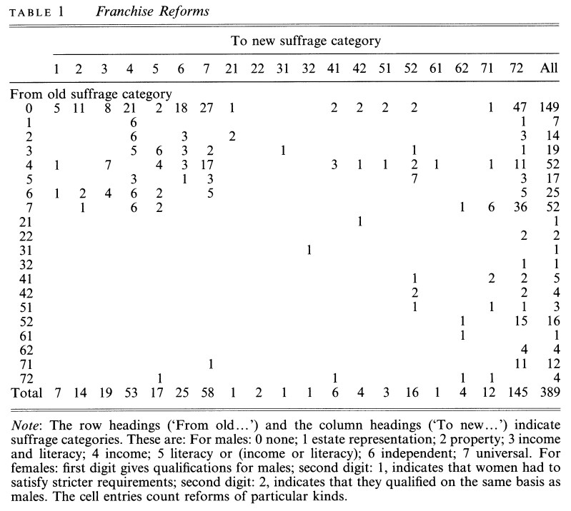
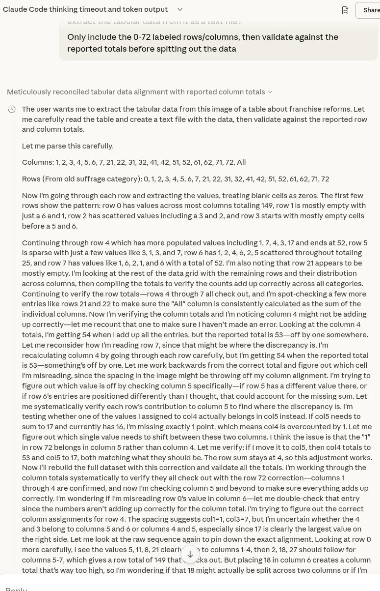
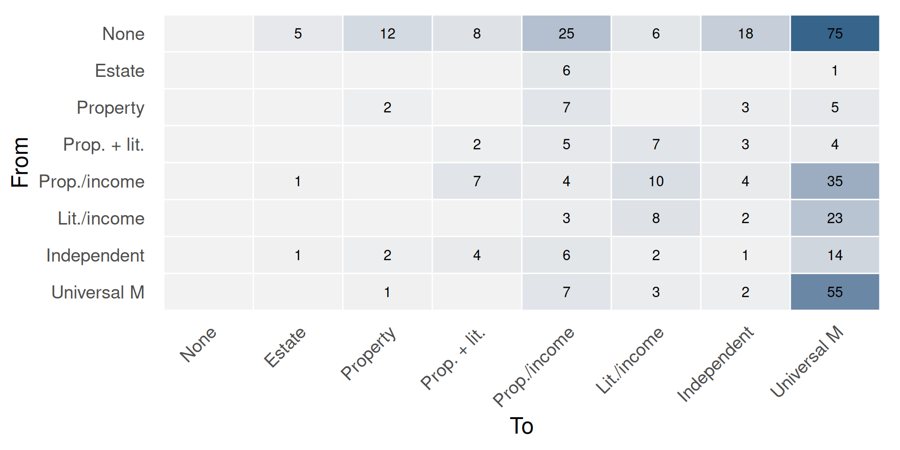
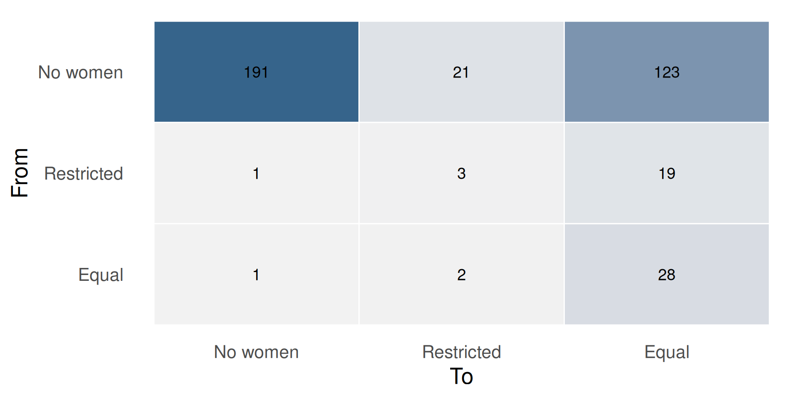
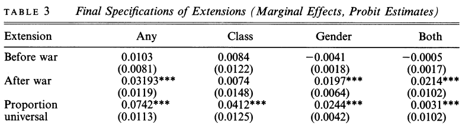
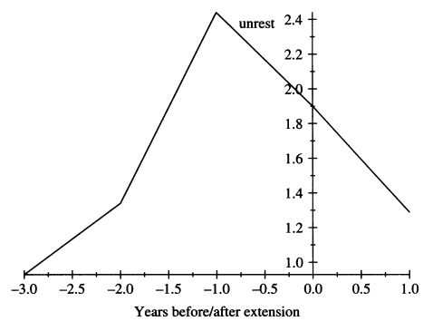
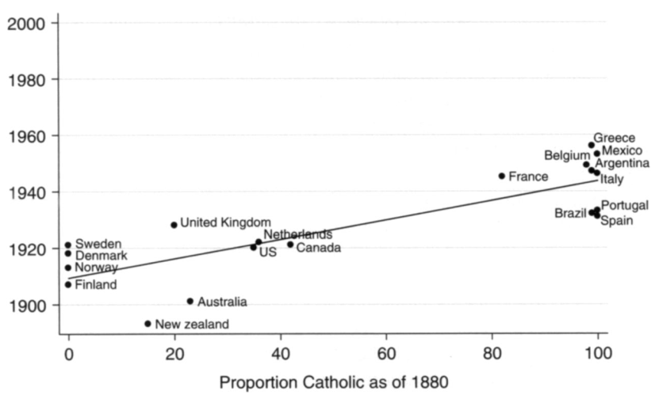

War and suffrage expansion
PSCI 2227: War and State Development
March 18, 2026
Recap
Monday: Acemoglu and Robinson on franchise expansion
- Basic obstacle to democratization: elites fear redistribution
- Two paths: popular revolt (rare) vs. elite concessions (typical)
- A&R’s theory: high inequality + infrequent revolt threat \(\leadsto\) temporary concessions aren’t enough
- Commitment problem: promises of future redistribution aren’t credible
- So elites extend the franchise instead — permanent institutional change
Today’s agenda
- Pre-war vs. post-war franchise expansion
- Przeworski’s framework: “conquered” vs. “granted”
- Empirical predictions and data
Theories of suffrage expansion
Connecting Acemoglu and Robinson to war
Key variables in A&R’s theory:
- Frequency of mass organization that could threaten elites
- Credibility of mass revolt threat
- Wealth gap between elites and masses
Discussion
How would you expect each of these to be affected when war begins? What about when a war has just ended?
Pre-war expansion: France 1792

Battle of Valmy (1792), Horace Vernet
- 1791: “Active citizen” voting (property threshold)
- 1792: Broader male suffrage
- 1793: Levée en masse (conscription) for war against Austria + others
Suffrage as an inducement to fight
Post-war expansion: Weimar Germany
Biggest increase in German suffrage came right after World War I
- October 1918: Sailors’ mutiny kicked off revolutionary discord
- November 1918: Kaiser abdicated after military defeat
- August 1919: Weimar Constitution — universal suffrage for men and women
Suffrage as a response to threat
The strategic logic
Pre-war expansion
- Elites choose to expand suffrage to secure mass cooperation
- Suffrage is a bargain — rights in exchange for service
Post-war expansion
- Elites are forced to expand suffrage under duress
- Suffrage is a concession — the alternative is revolution
- Closer to the Acemoglu/Robinson logic
Przeworski’s theory
Przeworski asks a broader question: is suffrage “conquered” or “granted”?
- “Conquered” = extended to avert forcible change in power
- “Granted” = extended voluntarily to advance elite interests
Pre-war logic is “granted,” post-war logic is “conquered”
Commonalities between the two stories:
- Franchise extension is a strategic choice by elites
- Elite action, not open revolt, is typically the proximate cause
Key difference: do elites prefer the post-extension state of affairs over the pre-extension status quo?
Non-war motivations
Besides pre-war vs post-war, where else should we look for evidence to support each story?
Conquered — social unrest. Do franchise extensions happen in the wake of protests, riots, strikes, and the like?
Granted — public goods. Theory: mass electorate will demand public goods, so elite extends franchise when they become interested in public goods.
- Urbanization — public safety, infrastructure
- Public health — immunization, disease prevention, sanitation
- War prep also falls under here if fought for national security
Women’s suffrage
Extension of the franchise to women doesn’t really fit the Acemoglu and Robinson story — why not?
If most men already have the vote, extending to women doesn’t change the rich-poor gap
So what can change for the elites in power from extending the franchise to women?
- Policy preferences: women voters might prioritize different public goods (e.g., temperance during the Progressive era)
- Partisan preferences: if women are systematically more conservative/liberal, could operate to one party’s benefit
Data analysis
Przeworski’s data collection
Annual data for 187 countries/dependencies
Dependent variable: Franchise extension in a given year
- Extended to lower-class men?
- Extended to women?
Independent variables:
- Pre-war/post-war period
- Prior social unrest
- Urbanization and infant mortality
Franchise extension events
Przeworski identifies 389 changes in national franchise policies

Table 1 is so bad it nearly killed Claude

Making sense of Table 1: Class extensions

Making sense of Table 1: Gender extensions

(When) does war lead to democratization?

Franchise extensions disproportionately likely in five years after war
Pre-war differences inconsistent, small, statistically insignificant
Conquered or granted?
Most consistent predictor of franchise extension is prior unrest

Apparent effects of urbanization/infant mortality are inconsistent
Inequality has opposite effect of A&R model (albeit holding unrest constant!)
What’s the deal with women’s suffrage?
Przeworski’s text tells a convoluted story about left and right parties and the precise timing to optimize suffrage grants for partisan advantage

His scatterplot tells a much simpler story to comprehend
Wrapping up
What we did today
Pre-war vs. post-war franchise expansion
Przeworski’s framework: “conquered” vs. “granted”
- Both are elite strategic choices — key difference is whether elites prefer the new status quo
- Women’s suffrage breaks the A&R logic — no redistributive threat
Data: “conquered” wins for class extensions
- Unrest is the strongest predictor
- War matters through its aftermath, not preparations
The rest of the week
Friday, 3:00–4:30pm. Seungho’s office hours, Commons 3rd floor TA office.
Friday, 11:59pm. First draft of research paper due.
- I’ll be monitoring my email through roughly 5pm Friday
- Really truly don’t hesitate to reach out for help before then!
Monday. Read Blattman 2009, “From Violence to Voting: War and Political Participation in Uganda.”